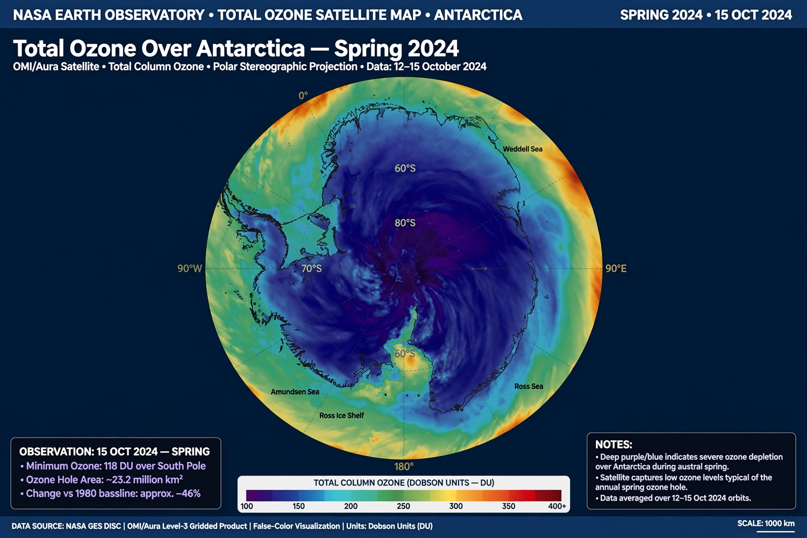

Ozone depletion

Ozone depletion describes the thinning of Earth's stratospheric ozone layer, which shields the surface from much of the Sun's ultraviolet radiation. The phenomenon became a global concern in the 1980s with the discovery of the Antarctic 'ozone hole'.
The main cause was chlorofluorocarbons (CFCs) and related industrial chemicals, whose chlorine and bromine atoms catalytically destroy ozone in the stratosphere.
Discovery
In 1974 chemists Mario Molina and F. Sherwood Rowland proposed that CFCs could reach the stratosphere and release ozone-destroying chlorine; they later shared a Nobel Prize for this work. In 1985 scientists of the British Antarctic Survey reported severe springtime ozone losses over Antarctica, soon confirmed by satellite data.
The polar stratospheric clouds that form in the extreme cold of the Antarctic winter provide surfaces on which chlorine is converted to its most destructive forms, explaining why depletion is worst over the poles in spring.
Effects
Increased ultraviolet-B radiation at the surface raises risks of skin cancer and cataracts and can harm phytoplankton, crops and ecosystems. The ozone hole also influences Southern Hemisphere weather patterns, including the position of mid-latitude storm tracks.
Montreal Protocol and recovery
The Vienna Convention (1985) set the framework, and the Montreal Protocol (1987) imposed binding phase-outs of ozone-depleting substances. It is widely regarded as the most successful environmental treaty, having achieved universal ratification and eliminated the great majority of controlled chemicals.
Because CFCs persist for decades, recovery is slow: the ozone layer is projected to return to 1980 values around the 2040s globally and around the 2060s over Antarctica. The Kigali Amendment (2016) extended the treaty to phase down HFCs, which are potent {L('Greenhouse_gas','greenhouse gases')} though not ozone-depleting.
See also: Vienna Convention for the Protection of the Ozone Layer · Atmosphere of Earth · Climate change · Ultraviolet